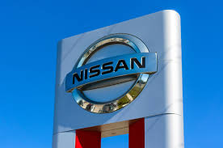
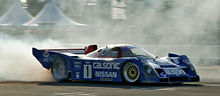
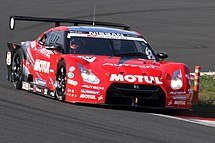

Nissan Motor Co., Ltd. (en japonés: 日産自動車株式会社 Nissan Jidōsha kabushiki gaisha?) es un fabricante japonés de automóviles, con base en Nishi-ku (Yokohama). Su nombre común, Nissan, es un acrónimo de "Nippon Sangyo". Está entre las principales compañías automotrices en términos de producción anual de vehículos. Desde 1999 forma parte de una triple alianza Renault-Nissan-Mitsubishi, donde la firma francesa llegó a reducir su participación en Nissan pasando del 43% al 15%, por lo que el 28% restante serían transferidos a un fideicomiso francés.
Así, los derechos de voto del Grupo Renault y Nissan estarían limitados al 15%.[1] También tiene el 34% de Mitsubishi,[2] mientras que Renault Samsung Motors dejó de existir al ser renombrado como Renault Korea Motors, derivado de un acuerdo industrial firmado con Geely.
Por otra parte, el conglomerado automotriz AvtoVAZ adquirió el 99% de la fábrica de Nissan en San Petersburgo, donde producirá modelos Lada al firmarse un acuerdo para que los activos de Nissan en Rusia pasen a manos de dicha compañía local.
Nismo (Nissan Motorsports) es la división deportiva del fabricante. En Japón, Nissan ha competido en el Campeonato Japonés de Sport Prototipos y el Super GT Japonés.
La marca ha participado en las 24 Horas de Le Mans del Campeonato Mundial de Resistencia en distintos períodos desde 1986. Logró el quinto puesto en 1990 con el Nissan R90CP y el tercer puesto en 1998 con el Nissan R390 GT1, en ambos casos con tripulaciones japonesas.
En Estados Unidos, Nissan ganó el Campeonato IMSA GT de 1989, 1990 y 1991 con el piloto Geoff Brabham, y logró triunfos en las 24 Horas de Daytona de 1992 y 1994 y las 12 Horas de Sebring de 1989, 1990, 1991 y 1994. Desde 1999 hasta 2002 compitió en la IndyCar Series, donde Eddie Cheever fue tercero en 2000.
A partir de 2009, Nismo ha competido con el Nissan GT-R en el Campeonato Mundial de GT1 y la Blancpain Endurance Series, además de campeonatos nacionales de gran turismos.